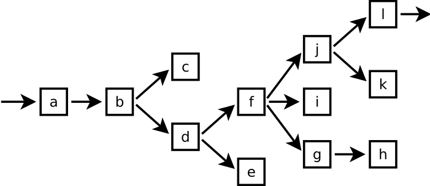
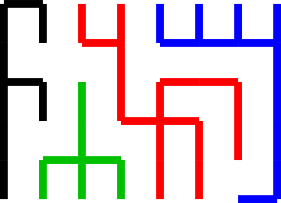

XXXXXXXXXXXXXXXXXXX > X X X X XXXXX X X XXX X X X X X X X X X X X X XXX XXX XXXXX X X X X X X X X XXXXX XXX XXX X X X X X X X X XXXXX XXX XXX XXX X X X X X X X XXXXXXXXXXX X X X X > XXXXXXXXXXXXXXXXXXX
Írjunk programot, amelyik kirajzol egy véletlenszerűen generált, kört nem tartalmazó labirintust karakterekből! A falakat jelezze X karakter, a járatokat meg szóköz. A kimenet nézzen úgy ki, mint oldalt!
Az elv
Nézzük meg először egy kicsit jobban egy labirintus anatómiáját. Az egész labirintus egy kétdimenziós tömbben tárolható; a kétdimenziós tömb ki van töltve X-ekkel, és néhol járat van benne szóközökből. A következő rajz egy kinagyított labirintust mutat, bejárattal és kijárattal.
XXXXXXXXXXXXXXXXXXXXXXXXX
X X X
> -- a X e X g --- h X
X X X
X | X | X | XXXXXXX
X X
X b --- d --- f --- i X
X X
X | XXXXXXX | XXXXXXX
X X
X c X k --- j --- l -- >
X X
XXXXXXXXXXXXXXXXXXXXXXXXX
Látható, hogy a labirintus tartalmaz termeket. Ezeket betűk jelölik. Az egyes termekben járatok lehetnek más termek felé; ha több terem felé indul valahonnan járat, akkor az egy elágazás. Ha elfelejtjük egy időre ezt a 2D ábrázolást, és rajzolunk egy gráfot, amelyen a termek a csúcspontok, az őket összekötő járatok pedig az élek, akkor a következő ábrát kapjuk (a fenti labirintussal teljesen megegyező kialakítással, érdemes összevetni a termek kapcsolatát).
Minden terembe egy járat vezet, és minden teremből indulhatnak ki további járatok, amelyek termekbe vezetnek – amely termekből pedig további labirintusok indulhatnak ki. A szerkezet rekurzív felépítésű, ezért a feladat rekurzívan oldható meg – mondá Niklaus Wirth a híres Algoritmusok + adatstruktúrák = programok című könyvében. A megoldásban a gráf formát viszont nem előnyös használni. A tömb jobban jön, mert az tárolja az egyes termek szomszédsági viszonyait, koordinátáit is, nem csak az összeköttetéseket.
Az algoritmus
0. XXXXXXX 1. XXXXXXX 2. XXXXXXX 3. XXXXXXX X X X X XXXXXXX XoXXXXX Xo *XXX XXXXXXX XXXXXXX X XXXXX X XXXXX X X X X .XXXXX .XXXXX .XXXXX XXXXXXX XXXXXXX XXXXXXX XXXXXXX
A tömbben minden második pozíción (vízszintesen és függőlegesen is) fixen termek vannak, ahonnan járatok indulhatnak tovább (0. rajz). Ezért a tömb méretének, amibe rajzolunk, páratlannak kell lennie mindkét irányban.
Az algoritmus, a fenti rajzokon bemutatva, a következőképpen működik. Induljunk ki egy
teljesen kitöltött pályából, és tegyük fel, hogy egy járatot már kivájtunk. A pontot, ahol éppen
vagyunk, jelölje a pont (.) karakter (1. rajz). Innen négy irányba mehetünk tovább
(fel, le, balra, jobbra). A balra vezető irányt ki kell hagynunk, mert ott már van járat, onnan
jöttünk. Ha felfelé indulunk, akkor ki kell vájni a pont feletti helyet, és a kettővel felette
lévőt, így kerülünk a karikával jelzett helyre (2. rajz). Az új helyen ugyanaz a feladatunk,
mint az előbb: innen is négy irányba mehetünk tovább (persze ebből a lefele irányt nem
számítjuk, hiszen ott már járat van). Ha minden lehetséges irányba mentünk, akkor befejeztük a
rajzolást – ilyenkor vissza kell ugranunk az előző pontba, és megnézni, hogy onnan tudunk-e még
bármerre menni. A rekurzió itt abban segít nekünk, hogy visszamenőlegesen automatikusan meg
lehet jegyezni, melyik irányokban jártunk már, és melyik irányok felé kell még járatot
vágni (ha lehet).
void labirintus(Palya p, int x, int y);A labirintusrajzoló függvény paraméterként veszi át, hogy melyik koordinátából indulva kell rajzolnia (x, y). Innen négy irányba mehet tovább; ezen irányok közül véletlenszerűen kell választania, ez adja majd az egész pálya véletlenszerűségét. Ugyanakkor mind a négy irányba el kell indulni, különben kitöltetlen részek maradnak a pályán. Ez úgy oldható meg, hogy egy tömbbe betesszük a négy irányt (fel, le, jobbra, balra) és megkeverjük a tömböt. Ezzel kialakul egy véletlenszerű sorrend, pl. jobbra, le, fel, balra. Utána ezek szerint kell indulni amerre lehet.
Ha a választott irányba nézve már van egy szóköz, az azt jelenti, hogy ott már van járat. Ez két esetben lehetséges: (1) pont most jöttünk onnan, vagy (2) a kacskaringós labirintus más úton már eljutott oda. Az elsőnél egyértelmű, hogy arrafelé nem kell menni. A második esetben viszont nem is szabad arra menni, mert ha oda járatot vágnánk, akkor kör alakulna ki a labirintusban.
Az algoritmus működését az animáció szemlélteti. A rajzolás a bal felső sarokból indul. Minden helyen, ahol járatot kialakít a program, és rekurzív függvényhívás történik, a videón először egy kék jel lesz csak. Miután a rekurzív függvényhívások mind visszatértek, csak utána cseréli ki ezt a kék jelet a végleges feketére. Így azokat a helyeket, ahol a rajzoló függvény még nem futott le teljesen (ahova még vissza kell térnie, megvizsgálni, hogy esetleg onnan még más irányba is indítható egy út), kékkel lehet látni.
A program
A lenti programban a következő részek vannak. Egy kétdimenziós Palya tömb
típust hozunk létre, annak a belsejébe rajzolunk. A tömb mindkét irányban páratlan méretű kell
legyen (ez látszik a fenti rajzokon is), mert két egységenként van egy pont, ahonnan kanyarodni
lehet. Induláskor az egészet ki kell tölteni fallal (ures()), és abba vájni a járatokat
(labirintus()).
A labirintus() függvény kialakít egy olyan labirintust, amelyik teljesen körbe
van zárva fallal. Ezért kell úgy indítani a rajzolást, hogy az (1, 1) koordinátákra hívjuk meg a
függvényt – a 0. indexű sorban és oszlopban mindenhol fal lesz. A labirintus rajzolása után
trükkösen a main() függvényben a bal felső és a jobb alsó sarokhoz még utólag
beírunk egy járatot, hogy úgy nézzen ki, mintha ott lenne a bejárat és a kijárat.
A tömb keverése úgy működik, hogy a tömb minden elemét (0..3 indexűek sorban) megcseréljük egy véletlenszerűen választott elemmel. Így biztos minden elemet elmozdítunk az eredeti helyéről, nem marad semmi az eredeti pozícióján.
#include <stdio.h>
#include <stdlib.h>
#include <time.h>
#define MERETX 35
#define MERETY 15
/* szandekosan karakterkodok, igy konnyu printfelni */
typedef enum Cella { Jarat = ' ', Fal = 'X' } Cella;
typedef Cella Palya[MERETY][MERETX];
/* az egesz palyat fallal tolti ki */
void ures(Palya p) {
for (int y = 0; y < MERETY; ++y)
for (int x = 0; x < MERETX; ++x)
p[y][x] = Fal;
}
/* kirajzolja */
void kirajzol(Palya p) {
for (int y = 0; y < MERETY; ++y) {
for (int x = 0; x < MERETX; ++x)
/* itt hasznalja ki, hogy az enum ertekek szandekosan
* egyeznek a karakterkodokkal */
putchar(p[y][x]);
putchar('\n');
}
}
/* ez maga a generalo fuggveny */
void labirintus(Palya p, int x, int y) {
typedef enum { fel, le, jobbra, balra } Irany;
Irany iranyok[4] = {fel, le, jobbra, balra};
/* erre a pontra hivtak minket, ide lerakunk egy darabka jaratot. */
p[y][x] = Jarat;
/* a tomb keverese */
for (int i = 3; i > 0; --i) { /* mindegyiket... */
int r = rand() % (i+1); /* egy veletlenszeruen valasztottal... */
Irany temp = iranyok[i]; /* megcsereljuk. */
iranyok[i] = iranyok[r];
iranyok[r] = temp;
}
/* a kevert iranyok szerint mindenfele probalunk menni, ha lehet. */
for (int i = 0; i < 4; ++i)
switch (iranyok[i]) {
case fel:
if (y >= 2 && p[y - 2][x] != Jarat) {
p[y - 1][x] = Jarat; /* elinditjuk arrafele a jaratot */
labirintus(p, x, y - 2); /* es rekurzive megyunk tovabb */
}
break;
case balra:
if (x >= 2 && p[y][x - 2] != Jarat) {
p[y][x - 1] = Jarat;
labirintus(p, x - 2, y);
}
break;
case le:
if (y < MERETY - 2 && p[y + 2][x] != Jarat) {
p[y + 1][x] = Jarat;
labirintus(p, x, y + 2);
}
break;
case jobbra:
if (x < MERETX - 2 && p[y][x + 2] != Jarat) {
p[y][x + 1] = Jarat;
labirintus(p, x + 2, y);
}
break;
}
}
int main(void) {
Palya p;
srand(time(0));
/* ures palyara general egy labirintust */
ures(p);
labirintus(p, 1, 1);
/* bejarat es kijarat */
p[1][0] = Jarat;
p[MERETY - 2][MERETX - 1] = Jarat;
/* mehet kirajzolasra */
kirajzol(p);
return 0;
}
Érdekes rokonság figyelhető meg a labirintus rajzoló és az alakzat kifestő algoritmus között. Mindkettőnek az a feladata, hogy a rendelkezésre álló térrészt kitöltse. Ezért mindkét algoritmus mind a négy irányba (fel, le, jobbra, balra) megpróbál menni. A kitöltésnél, mivel a konkrét útvonalnak nincs hatása az eredményre, mindegy, milyen irányba indulunk. A labirintusnál viszont látszik a terület „kifestésének” útvonala is – és mivel a célunk az, hogy össze-vissza haladjunk, az indulás irányát minden lépésben véletlenszerűen választjuk ki. (Érdemes megnézni a labirintusgeneráló program kimenetét akkor, ha kihagyjuk ezt a keverést.) Emiatt egyébként a labirintusgeneráló algoritmus szabálytalan alakú labirintusok létrehozására is alkalmas. Kis módosítás után akár a Batman-jel belsejébe is generálhatnánk egy labirintust vele.
A területet bejáró algoritmus útvonalkeresésre is használható. Ebben az esetben a függvénynek visszatérési értéke is kell legyen: IGAZ, ha abba az irányba indulva megtalálható egy keresett dolog (pl. a kijárat vagy egy elrejtett kincs), HAMIS, ha nem. Ez adja az ötletet ahhoz, hogyan lehet olyan programot írni, amelyik megtalálja a labirintusból kivezető utat.
Folytassuk az előző feladatot. Legyen most az a feladvány, hogy adott egy labirintus egy kétdimenziós tömbben, és nekünk kell kitalálni és belerajzolni a megoldást, vagyis a bejárattól a kijáratig vezető utat.
A megoldás algoritmusa
Térjünk vissza a labirintus gráffá alakításához. A gráfban a kiindulási ponttól egy út vezet a végcélhoz (mivel a labirintus nem tartalmaz kört). Ezen kívül az összes többi terem, ahova bemegyünk, az zsákutca.
Egy rekurzív függvény, amelyik megmondja azt, hogy egy adott pontból egy adott helyre el lehet-e jutni, körülbelül így nézne ki:
FÜGGVÉNY kijárat_keres(aktuális_hely, kijárat_helye)
LEGYEN megvan_a_kijárat=HAMIS
/* ha már ott vagyunk, akkor nyilván igaz */
HA aktuális_hely=kijárat_helye
LEGYEN megvan_a_kijárat=IGAZ
/* ha valamelyik irányba el lehet arra jutni */
CIKLUS az összes leszármazott felé
HA az adott irányba lehet menni
ÉS kijárat_keres(leszármazott_helye, kijárat_helye)
LEGYEN megvan_a_kijárat=IGAZ
CIKLUS VÉGE
FÜGGVÉNY VÉGE, visszaadja a megvan_a_kijárat tartalmát
Vagyis bejárjuk az összes járatot, és ha egy adott irányba indulva van a megoldás, akkor a függvény igazzal tér vissza, egyébként hamissal.
A programunkban nem irányított gráf van, hanem egy irányítatlan, nyilak nélkül. Egy kétdimenziós tömbben vannak benne a járatok; ha egy adott helyről elmegyünk jobbra, akkor onnan visszafelé, balra is tudunk jönni. Erre figyelni kell, különben előfordulhat az, hogy oda-vissza lépked az algoritmus a végtelenségig. Ezért azt kell csinálni, hogy a már megvizsgált járatokba egy jelet teszünk. Ahova léptünk, arról a helyről feltételezzük, hogy végülis egy zsákutca lesz – ezzel a jellel (a kódban a '.' karakter) szinte befalazva a járatot, hogy többé erre már ne jöjjünk. Ha a rekurzív függvényhívások bármelyike igazzal tér vissza, vagyis megtudjuk, hogy arrafelé a kijárathoz vezet az út, az azt jelenti, hogy a hely, ahol állunk, az maga is a kijárathoz vezető úton van, ezért oda a függvény végén esetleg letesszük a kijárathoz vezető út jelét (ami a lenti kódban egy csillag).
Az algoritmus működése itt látható. Lényegében rekurzívan nekiindul bejárni az egész labirintust; ha útközben valahol megtalálja a kijáratot, akkor visszafelé az oda vezető utat meg tudja jelölni, mert a hívott függvények IGAZzal tértek vissza, ezzel jelezve, hogy arra található. Így az eredetileg, bejárás közben egyben falként is betett kék jelzések is végül kicserélhetők zöldre. Ha HAMISsal tért vissza, akkor meg pirosra.
A négy vizsgált iránynál a feltételbe betettem azt is, hogy ha egy adott irányba meglett
a megoldás, akkor a többi felé el se induljon már – arrafelé úgysem lesz (másik)
kijárat.
Egyébként ezt a programot már nem érdeklik a páros pozíciókon
elhelyezkedő termek – a termeket és az azokat összekötő utakat egységesen kezeli.
Ezért nincsen benne sehol x+2 és hasonló kifejezés.
Alább látható a program konzolos változata. A rajzoló és megoldó program egyesített, SDL grafikus könyvtárat használó változata letölthető innen: labirintus.c. A videók ezzel a programmal készültek.
#include <stdio.h>
#include <stdbool.h>
#define MERETX 19
#define MERETY 13
typedef enum Cella {
Jarat = ' ',
Fal = 'X',
Kijarat = '*',
Zsakutca = '.',
Kerdeses = '?'
} Cella;
/* a mainben levo sztring miatt ez most char tomb,
* de a celjaink szempontjabol teljesen mindegy, hiszen
* a fenti felsorolt ertekek szandekosan karakterkodok */
typedef char Palya[MERETY][MERETX + 1];
void kirajzol(Palya p) {
for (int y = 0; y < MERETY; ++y) {
for (int x = 0; x < MERETX; ++x) {
putchar(p[y][x]);
}
putchar('\n');
}
}
/* igazzal ter vissza, ha arrafele megtalalta,
* hamissal, ha nem */
bool megfejt(Palya p, int x, int y, int celx, int cely) {
/* elso korben bejeloljuk ezt a helyet Kerdesesnek -
* ez vegulis csak azert lenyeges, hogy ne jarat legyen
* itt, mert akkor visszajohetne ide */
p[y][x] = Kerdeses;
/* egyelore nem talaljuk a Kijaratot */
bool megtalalt = false;
/* pont a cel8nal allunk? */
if (x == celx && y == cely)
megtalalt = true;
/* ha meg nem talaltuk meg a Kijaratot... ES ha tudunk jobbra menni... */
if (!megtalalt && x < MERETX - 1 && p[y][x + 1] == Jarat) {
/* ha arra van a megfejtes */
if (megfejt(p, x + 1, y, celx, cely))
megtalalt = true;
}
/* balra */
if (!megtalalt && x > 0 && p[y][x - 1] == Jarat) {
if (megfejt(p, x - 1, y, celx, cely))
megtalalt = true;
}
if (!megtalalt && y > 0 && p[y - 1][x] == Jarat) {
if (megfejt(p, x, y - 1, celx, cely))
megtalalt = true;
}
if (!megtalalt && y < MERETY - 1 && p[y + 1][x] == Jarat) {
if (megfejt(p, x, y + 1, celx, cely))
megtalalt = true;
}
/* viszont ha innen kiindulva meg lehet talalni a Kijaratot
* (most mar tudjuk a fuggvenyek visszateresi ertekebol),
* akkor a Kijarathoz vezeto utkent jeloljuk meg. */
p[y][x] = megtalalt ? Kijarat : Zsakutca;
/* jelezzuk a hivonak, hogy valahonnan errefele indulva
* lehet-e Kijaratot talalni */
return megtalalt;
}
int main(void) {
Palya p = {
/* itt sztringgekkel adom meg a palyat, hogy jol latsszon a
* forraskodban a bemenet. azoknak van lezaro nullajuk.
* ezert egy karakterrel szelesebbre vettem a tombot a tipus
* megadasanal (typedef fent), de nem hasznalom a programban
* a fordito altal odarakott lezaro nullat semmire. */
"XXXXXXXXXXXXXXXXXXX",
" X X X X",
"XXXXX X X XXX X X X",
"X X X X X X X",
"X X XXX XXX XXXXX X",
"X X X X X",
"X X XXXXX XXX XXX X",
"X X X X X X",
"X XXXXX XXX XXX XXX",
"X X X X X X",
"X XXXXXXXXXXX X X X",
"X ",
"XXXXXXXXXXXXXXXXXXX"
};
/* honnan indulunk, es hol a jutalomfalat */
megfejt(p, 0, 1, MERETX - 1, MERETY - 2);
kirajzol(p);
return 0;
}Minden rekurzív problémának létezik iteratív megoldása. Tegyük fel, hogy van egy labirintusunk, amelyik megfelel a fenti specifikációnak, vagyis egy bejárata van, egy kijárata, és nincs benne kör (vagyis mindenhova egy úton lehet eljutni). Ha bemegyünk ebbe a labirintusba, és gondolkodás nélkül megyünk, megyünk; mindössze annyit csinálunk, hogy a jobb kezünket a falon tartjuk, akkor előbb-utóbb eljutunk a kijárathoz. Ez iteratív algoritmus: hol vagyunk (x, y), merre megyünk (fel/le/jobbra/balra). Ha tudunk jobbra fordulni, jobbra megyünk. Ha nem, akkor egyenesen próbálunk meg, és ha az se, akkor fordulunk egyet balra. Ezt ismételgetjük (iteráljuk!) addig, amíg meg nem lesz a kijárat.
A fenti labirintust generáló program a vermet használja arra, hogy megjegyezze, hova kell még visszamennie, esetleg honnan kell még további utakat kiindítania. Amikor meghívja a függvény saját magát, a koordináták (mint lokális változók) bekerülnek a verembe; és ha az a függvényhívás visszatért, akkor onnan folytatódik a végrehajtás, ahol abbamaradt. Az egymás utáni függvényhívások a verem végére raknak be két új koordinátát; a visszatérésnél pedig a verem végéről tűnik el egy koordináta.
A labirintus generálására többféle iteratív megoldás létezik. A növekvő fa (growing tree) nevű változat működése a következő. Mindig, amikor egy új termet vájunk ki, akkor annak a teremnek a koordinátáit elmentjük egy tárolóba. Ezután választunk egy elemet ebből a tárolóból, és abból kiindulva valamelyik szomszéd felé járatot próbálunk meg kialakítani – ha sikerül, akkor az új terem koordinátáit is betesszük a tároló végére. Ha a választott teremből már nem lehet semerre sem haladni (mind a négy irányba már van terem), akkor pedig kitöröljük. Mindezt addig kell ismételgetni, amíg egyszercsak üres nem lesz a tároló.
Az algoritmus érdekessége, hogy a tárolóból – amelyet a lentebb letölthető programban egy tömbbel valósítottunk meg – sokféleképpen választhatunk elemet. Ha mindig abból a teremből próbálunk meg továbbmenni, amelyik a tároló végén van (vagyis amelyet legutoljára tettünk oda), akkor visszakaptuk az első, rekurzív algoritmust. (Ha mindig csak a végére teszünk be elemet, és mindig csak az elejéről veszünk el, akkor pont vermet kapunk!) Más lehetőségek is elképzelhetőek:
- Mindig az elejéről vesszük az elemet.
- Véletlenszerűen választunk belőle.
- Véletlenszerűen választunk valamelyik feléből (pl. elejéről, végéről).
- Mindig az utolsót választjuk, de néha véletlenszerűen egyet a közepéről.
Ezek mind kissé eltérő kinézetű labirintust fognak gyártani. A lenti videóban mindig teljesen véletlenszerűen választódik ki az elem. Amikor egy terem koordinátái bekerülnek a listába, akkor zölddel jelöli meg azt a program; amikor abból a teremből már észrevette, hogy nem lehet továbbmenni, akkor befeketíti azt. Így zölddel azok a termek vannak megjelölve, ahova még majd később visszanéz.
A kód letölthető innen: growingtree.c. Ez a generálás
közben feljegyzett helyeket egy Pontok típusú tömbben tárolja. Ebben a tömbben el
kell férnie az összes feljegyzett pontnak (az animációban az összes zöldnek), így ezt kellően
nagyra kell választani. (Vagy írni hozzá egy láncolt listát – 10. előadás.) Ez az a tároló, amit
egy rekurzív algoritmusnál a verem váltana ki.
A program egyszerűsítéséhez egy apró trükköt vetettünk be. A labirintust tároló tömb szélére a járat elemből egy keretet rajzoltunk, minden oldalra. Így nem kell soha ellenőrizni a túlindexelést a mozgásnál, mert a rajzoló algoritmus azt hiszi, hogy ott járat van, és a kép széleire már nem lép. Mint a sztringek végén a lezáró nulla: egy jel, amiből tudjuk, hogy hol van vége a tömbnek. Szerencsére ez nem nagy pazarlás: ha növeljük a labirintus méretét, a területe négyzetesen nő, de a keret csak lineárisan, vagyis a „kidobott” memória mennyisége egyre kisebb a labirintus méretéhez képest.
Lássunk egy igazi iteratív megoldást, mert az előző mintha a rekurzív megoldást utánozná. A következő labirintusrajzoló neve Eller algoritmusa. Az érdekessége, hogy nem mászkál fel-le generálás közben a képen, hanem soronként gyártja le a labirintust; miután egy sort megrajzolt, többé azzal már nem foglalkozik, és így eltárolni se kell. Az általa foglalt memória ezért a labirintus szélességével arányos, és teljesen független a labirintus magasságától!
Az algoritmus működése
A működés lényege a következő. A futáshoz halmazokat kell tárolni: minden terem benne van egy halmazban, mégpedig úgy, hogy ha két tetszőleges terem között valamilyen úton összeköttetés van, akkor a két terem ugyanabban a halmazban kell legyen. Ez az információ segít a generáló algoritmusnak eldönteni, hogy összeköthet-e két egymás melletti termet, mert ha eleve egy halmazban vannak, akkor kör keletkezne. A halmazokat mutatnak egy generálás alatt álló labirintusban a jobb oldali ábra színei.
A kimenet egy sorának létrehozása két lépésből áll:
- Vízszintes összeköttetések létrehozása az egymás melletti termek között véletlenszerűen.
- Függőleges összeköttetések létrehozása az egymás alattiak között, úgyszint véletlenszerűen.
Hogy a labirintusban ne legyen kör, illetve izolált rész (ahova sehogyan sem lehet eljutni), az összeköttetéseknél a következő dolgokra kell figyelni:
- Vízszintes összeköttetéseknél: ha két egymás melletti terem már egy halmazban van, akkor nem szabad összekötni őket, mert különben kör keletkezne. Ha behúzunk egy vízszintes vonalat, akkor viszont az általa összekötött két terem halmazait egyesíteni kell (unió).
- Függőlegeseknél: ha egy cella egyedül van egy halmazban, akkor kötelező bekötni a felette lévőhöz (különben egy izolált pont keletkezne). Ha pedig egy cellát nem kötünk be, akkor az saját, új halmazba kerül.
A legelső és a legutolsó sorra speciális szabályok vonatkoznak. A labirintus generálásának elején minden cella a saját halmazába kerül (minden halmaz egy elemű lesz). Az utolsó sort pedig nem szabad véletlenszerűen létrehoznunk, hanem azokra a helyekre kötelezően kell összeköttetést raknunk, ahol két szomszédos terem külön halmazban van.
A megvalósítás
Halmazt, mint dinamikus tárolót, nincs kedvünk programozni, és amúgy is, a probléma kicsit speciálisabb annál, minthogy egy általános célú halmazt kelljen írjunk. Észrevehetjük ehelyett, hogy egy sorban minden terem pontosan egy halmazba tartozik bele. Ha a képzeletbeli halmazainkat megszámozzuk, akkor nincs már más dolgunk, mint hogy minden teremhez azt az egész számot rendelni, amilyen számú halmazba az tartozik. Vagyis semmi másra nem lesz szükségünk, csak egy integer tömbre!
A halmazok közötti műveletek nagyon egyszerűek maradnak. Ha két szomszédos teremnél kíváncsiak vagyunk rá, hogy egy halmazba tartoznak-e, csak össze kell hasonlítani a hozzájuk rendelt számokat. Amikor két halmazt egyesítünk (uniójukat képezzük), akkor a két halmaz helyett csak egy lesz – vagyis a teendőnk annyi, hogy az utóbbi halmazra hivatkozó egész számokat kicseréljük az előbbire hivatkozó egész számmal. Például ha a 10-es és a 12-es halmazt egyesítjük, akkor az összes 12-est kicseréljük 10-re, és kész. (Ezt a tömb egész sorában meg kell tennünk! Lehet, hogy két egymástól távoli terem egy halmazban van.) Amikor pedig új halmazt hozunk létre, hozzárendelünk egy olyan számot, amelyik nem jele egyik addigi halmaznak sem.
A programból két változat tölthető le, egy SDL-es és egy nem grafikus, szabványos kimenetre író verzió. Az utóbbi forráskódja ez: eller_stdio.c. Ezen jobban követhető az algoritmus működése. A program sorról sorra, betűről betűre írja ki a rajz karaktereit, balról jobbra és fentről lefelé. Mindegyik karakterkiírás kommentelve van, hogy hogyan kerül oda.
A grafikus változat animációt rajzol ki, hogy hogyan készül a labirintus: eller_sdl.c. (Ennek az animációnak a programkódja eléggé „teleszemetelte” a generálás a kódját, ezért van két változat.) A termekbe és járatokba beírt számok azt mutatják, hogy az a hely, melyik halmazhoz tartozott a generálás pillanata után. Fontos, hogy az algoritmus soronként gyártja a labirintust, úgyhogy föntről lefelé a halmazok sorszámai megváltozhatnak. (Ha nem így lenne, akkor mindenhol az 1-es szám szerepelne, hiszen bárhonnan bárhova el lehet jutni.) Ahova egy függőleges összekötést a program nem tesz be, oda a falra is ráírja a számot – ilyenkor ugyanis az alatta lévő terem egy új, addig üres halmazba kerül. Ha az a következő vízszintes sorban nincs összekötve semelyik szomszédjával sem, akkor tovább is viszi azt a számot. (A fenti videó ezzel a programmal készült.)